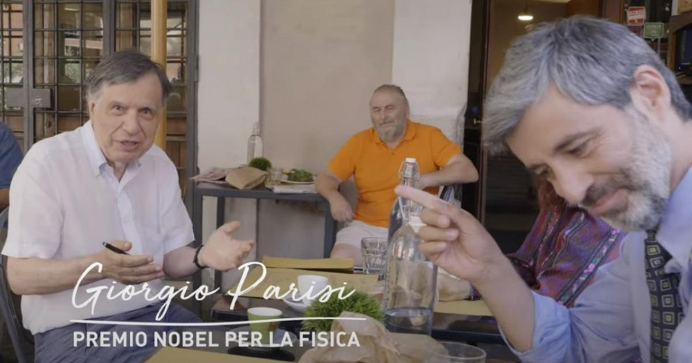
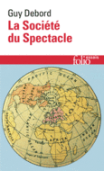
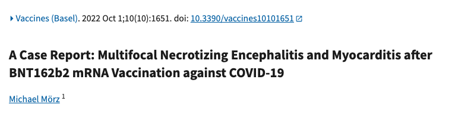
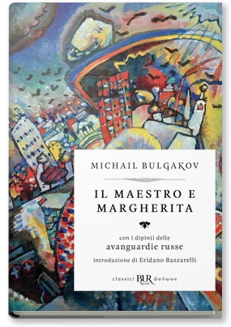

1:01:16 · 13 OPERE
La bancarotta della scienza e la costruzione di un mondo nuovo.
Il filo del discorso
Il contributo prende avvio da un bilancio del periodo cominciato nel 2020 e interroga le tracce che una crisi lascia nelle abitudini e nel linguaggio pubblico. Il relatore chiama bancarotta della scienza ciò che considera una subordinazione della ricerca all’industria culturale e al potere politico. Il rinvio a Huxley e il libro University, Inc.
Leggi la sintesi completaRiduci la sintesi
introducono il problema del rapporto fra istituzioni, interessi economici e autonomia del giudizio; Debord offre un secondo riferimento per discutere la distanza fra visibilità di un personaggio e valore di un contenuto. Il caso centrale è lo spot ministeriale del 2022 sulla quarta dose con Giorgio Parisi. Il relatore contesta il ricorso a un Nobel come testimonial, la parola sappiamo e lo slogan che accosta problema complesso e soluzione semplice. Attraverso l’esempio dell’aspirina tenta di mostrare la difficoltà di attribuire causalmente un evento mancato a un intervento preventivo. La scheda conserva questa obiezione come posizione dell’autore, precisando che la prevenzione può essere studiata mediante confronti appropriati tra gruppi: l’incertezza sul singolo controfattuale non rende inconoscibile una riduzione statistica del rischio. La discussione passa al case report di Michael Mörz, al risultato della fusione ottenuto al NIF e a una presunta trasmissione genetica degli effetti vaccinali. Questi esempi richiedono distinzioni sostanziali: un caso autoptico non dimostra un rischio generale, il guadagno sul bersaglio non coincide con il bilancio energetico dell’impianto e la tesi ereditaria rimane priva di uno studio identificabile nella fonte. Anche i giudizi su scienziati, comitati e istituzioni rimangono attribuiti al relatore, senza trasformare analogie e accuse in fatti accertati. Nella seconda metà la critica dei titoli accademici si estende all’etica professionale, alle biblioteche e alla vita delle librerie. Un aneddoto sulla confusione fra Carl e Albert Einstein distingue ricerca di un nome e comprensione di un testo. Il libro di Gadamer riporta al rapporto fra salute, singolarità della persona e ambiente, mentre la digressione sulla musica pone il problema di una lingua comune. La conclusione lega il coraggio kantiano e la massima di Hillel alla libertà di parola: comprendere il passato e assumere la responsabilità del proprio giudizio diventa, per il relatore, la condizione per immaginare un mondo diverso.
I libri nel discorso

Il mondo nuovo
Note sul riferimento
Copertina della raccolta: Mondadori · Oscar Moderni · 2016
L’immagine mostra il volume Mondadori che riunisce Il mondo nuovo e Ritorno al mondo nuovo. Il collegamento nel video riguarda il primo romanzo, per allusione al titolo inglese; non identifica un’edizione usata dal relatore.
Il relatore dichiara il riferimento del titolo a Brave New World di Aldous Huxley, nome deformato nella trascrizione automatica ma identificabile dal titolo inglese.

University, Inc.: The Corporate Corruption of Higher Education
Note sul riferimento
Copertina: Basic Books, brossura del 22 agosto 2006, ISBN 9780465090525, con una nuova introduzione dell’autrice. Prima edizione del 2005; il catalogo Wellcome registra il sottotitolo The Corporate Corruption of American Higher Education.
Immagine autentica dell’opera, controllata visivamente; l’edizione di riferimento non è attribuita al filmato.
University Inc. è nominato e raccomandato come libro sui rapporti fra accademia, finanziamenti e industria. L’autrice è Jennifer Washburn; l’edizione non è identificata nel filmato.

La quarta dose è fondamentale per gli over 60 (spot con Giorgio Parisi)
Note sul riferimento
Fotogramma dello spot: Giorgio Parisi al ristorante: Campagna istituzionale 2022 · fotogramma dello spot ripreso da Rai News
Fotogramma autentico dello spot ministeriale con Giorgio Parisi, pubblicato da Rai News. È un’immagine audiovisiva, non una copertina libraria. Non viene confuso con lo spot precedente sul nipote che accompagna la nonna, presentato nella pagina governativa del 4 luglio 2022.
Spot sulla quarta dose con un premio Nobel, poi esplicitamente chiamato Parisi; vengono commentati contenuti e messinscena, identificati nei documenti ministeriali e nel contributo Rai.

La società dello spettacolo
Note sul riferimento
Copertina: La Société du Spectacle, Gallimard, Folio essais 644, 10 luglio 2018, 224 pagine, ISBN 9782072779404. Opera originale del 1967; non i distinti Commentaires sur la société du spectacle del 1988.
Copertina francese autentica del catalogo Gallimard: Guy Debord, titolo rosso, marchio Folio e immagine cartografica circolare. L’edizione italiana effettivamente usata nel contributo non è identificata.
Richiamo a Guy Debord e al suo libro sulla società dello spettacolo, non a una generica nozione di spettacolarizzazione.

Apologia di Socrate
Identificazione probabile
Note sul riferimento
Copertina del volume Apologia di Socrate. Critone: BUR · Apologia di Socrate. Critone · a cura di Maria Michela Sassi, 1993
Copertina autentica del volume BUR contenente Apologia di Socrate e Critone. Il secondo titolo non è aggiunto come citazione del video; l’autore del testo è Platone, con Socrate come figura protagonista.
La vita degna di essere vissuta è richiamata attraverso Socrate: probabile allusione al passo 38a dell’Apologia, non titolo pronunciato né traduzione letterale.

Zhuang-zi (Chuang-tzu)
Identificazione probabile
Note sul riferimento
Copertina: Adelphi · Biblioteca Adelphi 121, 1982
Immagine autentica dell’opera, controllata visivamente; l’edizione di riferimento non è attribuita al filmato.
È raccontato il sogno della farfalla attribuito a Chuang-tzu, riconoscibile nel testo Zhuangzi. Non si identifica una traduzione o una raccolta moderna specifica.
La quarta dose è fondamentale per gli over 60 (spot con Giorgio Parisi)
Note sul riferimento
Fotogramma dello spot: Giorgio Parisi al ristorante: Campagna istituzionale 2022 · fotogramma dello spot ripreso da Rai News
Fotogramma autentico dello spot ministeriale con Giorgio Parisi, pubblicato da Rai News. È un’immagine audiovisiva, non una copertina libraria. Non viene confuso con lo spot precedente sul nipote che accompagna la nonna, presentato nella pagina governativa del 4 luglio 2022.
Lettura della frase dello spot sulla protezione dalla malattia grave; le note distinguono efficacia statistica, incertezza individuale e comunicazione pubblicitaria.

A Case Report: Multifocal Necrotizing Encephalitis and Myocarditis after BNT162b2 mRNA Vaccination against COVID-19
Identificazione probabile
Note sul riferimento
Intestazione autentica dell’articolo depositato in PMC: citazione, titolo e autore; non copertina di libro o fascicolo.: Intestazione autentica della versione pubblicata depositata in PMC: Vaccines (Basel), 1 ottobre 2022, 10(10), articolo 1651, DOI 10.3390/vaccines10101651. Intestazione dell’articolo, con citazione bibliografica, titolo e autore; l’immagine non riproduce la pagina completa.
Immagine del deposito scientifico primario: la corrispondenza con il riferimento orale resta probabile, perché il titolo non è pronunciato.
Nel passaggio: 86 s: Mörz (cognome scandito), patologo di Dresda, articolo di ottobre su lesioni cerebrali; il titolo non è pronunciato. L’identificazione è bibliografica probabile. Le conclusioni causali forti del relatore restano sue interpretazioni e non sono convalidate come dati generali.

Amleto
Identificazione probabile
Note sul riferimento
Copertina: BUR · 2022 · traduzione di Rocco Coronato · illustrazioni di John Austen
Immagine autentica dell’opera, controllata visivamente; non identifica l’edizione usata nel video.
La frase sul marcio in Danimarca è attribuita a Shakespeare: riferimento identificabile ad Amleto, atto I, scena 4; titolo non annunciato.

Il maestro e Margherita
Note sul riferimento
Copertina: BUR / Rizzoli · 2018
Immagine autentica dell’opera, controllata visivamente; l’edizione di riferimento non è attribuita al filmato.
Il maestro e Margherita è nominato nel paragone fra il cognome di un funzionario e un personaggio del romanzo; la voce bibliografica non certifica l’identità del funzionario.

Dove si nasconde la salute
Identificazione probabile
Note sul riferimento
Copertina: Raffaello Cortina, gennaio 1994, 208 pagine, ISBN 9788870782899. Originale tedesco Über die Verborgenheit der Gesundheit, 1993; il titolo inglese The Enigma of Health spiega la variante pronunciata, senza farne un distinto libro italiano.
Copertina autentica Cortina vista integralmente: fondo grigio, Hans-Georg Gadamer e Dove si nasconde la salute in alto, figura della Venere botticelliana in basso a destra, marchio editoriale sul lato sinistro.
Libro di Gadamer presentato come testo sul nascondimento della salute. Il titolo italiano Dove si nasconde la salute corrisponde al tema e all’opera, senza edizione accertata.

Risposta alla domanda: che cos’è l’Illuminismo?
Identificazione probabile
Note sul riferimento
Copertina della raccolta che comprende il saggio sull’Illuminismo: Firenze University Press · Sette scritti politici liberi · 2011 · a cura di Maria Chiara Pievatolo
Copertina del volume cartaceo FUP che comprende il saggio, riscontrato dal catalogo universitario. L’ISBN appartiene alla raccolta; il filmato non annuncia un’edizione e il titolo del saggio è un’identificazione probabile della citazione.
Il richiamo a Kant e all’invito ad avere coraggio nel giudicare autonomamente rimanda probabilmente al Sapere aude del saggio sull’Illuminismo, non a un titolo pronunciato.
Pirqè Avòt (Massime dei Padri)
Identificazione probabile
Note sul riferimento
Copertina: Copertina Massime dei padri. Pirké Avòt. Con traduzione a fronte, commenti, schede tematiche e racconti, Giuntina, Fuori collana, 2021, illustrazioni di Boris Shapiro, introduzione di Shalom Hazan, prefazione di Riccardo Di Segni, ISBN 9788880579014.
Copertina autentica illustrata con albero, figure di maestri e grande titolo ebraico Pirqè Avòt; immagine intera della scheda ISBN. Il titolo italiano non è sovrapposto artificialmente alla grafica. Hillel è autore della massima citata, non dell’intero trattato; Shapiro è illustratore, non autore antico. L’edizione moderna non viene attribuita al contributo.
Massima di Hillel: se non sono io per me, chi sarà per me? Il passo corrisponde a Pirkei Avot 1:14; nessuna edizione identificata.